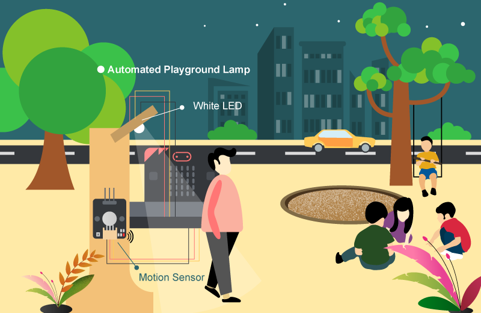
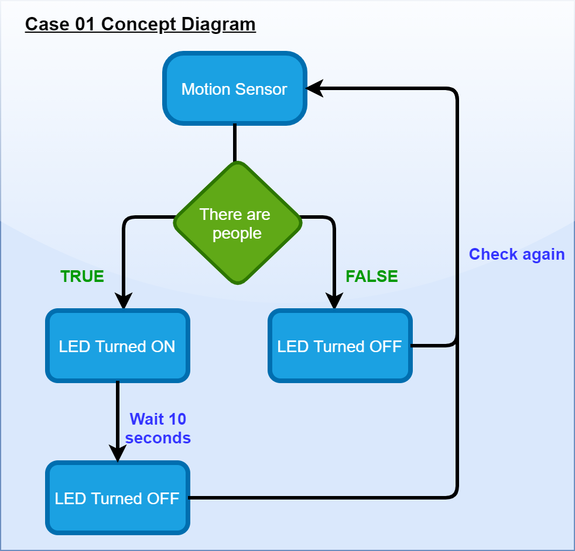
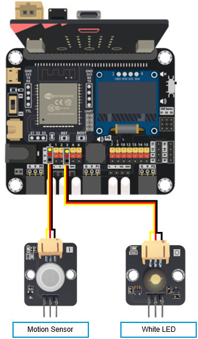
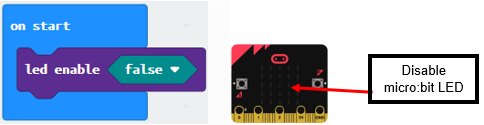
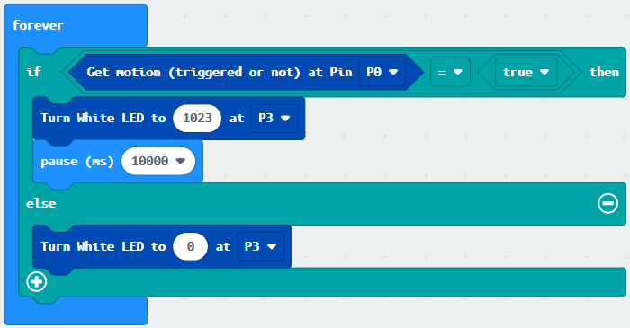
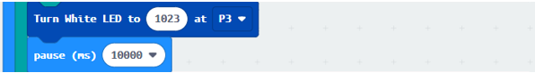
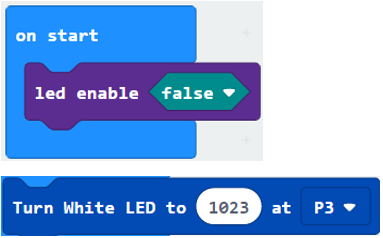

10. Case 01: Automated Smart Playground Lamp¶
Level:

10.1. Goal¶
Make a smart playground lamp by detecting the motion nearby.
10.2. Background¶
What is smart playground lamp?
Smart playground lamp is a lamp which can open automatically when someone passes by. Installing an auto-light can help the earth save electricity. When no one passes by, the light will automatically turn off.
Smart playground lamp operation
Motion sensor should be able to detect if there are people moving in the playground.
If there are people moving in the playground, the LED light should turn on, vice versa.

10.4. Assembly step¶
Step 1
Attach motion sensor and white LED to A1 model with M4 screws and nuts.

Step 2
Assembly completed!

10.5. Hardware connect¶
Connect Motion sensor to the P0 port of Smarthon IoT:bit
Connect LED light to the P1 port of Smarthon IoT:bit

10.6. Programming (MakeCode)¶
Step 1
Drag forever block from Basic. Snap if statement into forever, set get motion (triggered or not) at P0=true, that’s say motion is triggered, someone passes by.

Step 2
Turn white LED to 1023 at P1 as turning on white LED and pause 10 seconds.

Step 3
Else, turn white LED to 0 at P1 as turing off white LED.

Full Solution
MakeCode: https://makecode.microbit.org/_P36fA38jVih2
You could also download the program from the following website:
10.7. Result¶
Motion sensor is used to detect if there are people moving in the playground. If there are, the LED light will be turned on; otherwise, it will be turned off.

10.8. Think¶
Q1. How can you use motion sensors, other than turning on the light automatically?
Q2. How should we reset the programming if we connect the white LED light to P3?
Tips: As P3 is used by micro:bit LED.
(Refer to https://makecode.microbit.org/device/pins)
If we connect white LED light to P3, we need to disable micrbo:bit LED.

Q3. Show motion sensor value on OLED